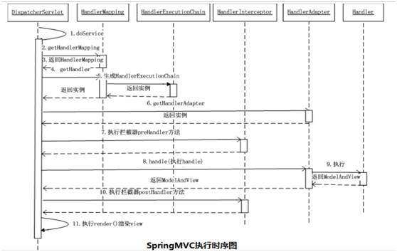

第8章 SSM框架¶
8.1请写出 spring 中常用的依赖注入方式。¶
通过 setter 方法注入
通过构造方法注入
8.2简述Spring中IOC容器常用的接口和具体的实现类¶
l BeanFactory SpringIOC容器的基本设置，是最底层的实现，面向框架本身的.
l ApplicationContext BeanFactory的子接口, 提供了更多高级的特定. 面向开发者的.
l ConfigurableApplicationContext, ApplicationContext的子接口，扩展出了close 和refresh等关闭刷新容器的方法
l ClassPathXmlApplicationContext：从classpath的XML配置文件中读取上下文，并生成上下文定义。应用程序上下文从程序环境变量中取得。
l FileSystemXmlApplicationContext ：由文件系统中的XML配置文件读取上下文。
l XmlWebApplicationContext：由Web应用的XML文件读取上下文。
8.3简述Spring中如何基于注解配置Bean和装配Bean,¶
（1）首先要在Spring中配置开启注解扫描
（2）在具体的类上加上具体的注解
（3）Spring 中通常使用@Autowired或者是@Resource等注解进行bean的装配
8.4说出Spring或者Springmvc中常用的5个注解，并解释含义¶
@Component 基本注解，标识一个受Spring管理的组件
@Controller 标识为一个表示层的组件
@Service 标识为一个业务层的组件
@Repository 标识为一个持久层的组件
@Autowired 自动装配
@Qualifier(“”) 具体指定要装配的组件的id值
@RequestMapping() 完成请求映射
@PathVariable 映射请求URL中占位符到请求处理方法的形参
只要说出机几个注解并解释含义即可，如上答案只做参考
8.5请解释Spring Bean的生命周期？¶
（1）默认情况下，IOC容器中bean的生命周期分为五个阶段:
l 调用构造器或者是通过工厂的方式创建Bean对象
l 给bean对象的属性注入值
l 调用初始化方法，进行初始化，初始化方法是通过init-method来指定的.
l 使用
l IOC容器关闭时，销毁Bean对象.
（2）当加入了Bean的后置处理器后，IOC容器中bean的生命周期分为七个阶段:
l 调用构造器或者是通过工厂的方式创建Bean对象
l 给bean对象的属性注入值
l 执行Bean后置处理器中的postProcessBeforeInitialization
l 调用初始化方法，进行初始化，初始化方法是通过init-method来指定的.
l 执行Bean的后置处理器中postProcessAfterInitialization
l 使用
l IOC容器关闭时，销毁Bean对象
只需要回答出第一点即可，第二点也回答可适当加分。
8.6简单的谈一下SpringMVC的工作流程？¶
l 用户发送请求至前端控制器DispatcherServlet
l DispatcherServlet收到请求调用HandlerMapping处理器映射器。
l 处理器映射器找到具体的处理器，生成处理器对象及处理器拦截器(如果有则生成)一并返回给DispatcherServlet。
l DispatcherServlet调用HandlerAdapter处理器适配器
l HandlerAdapter经过适配调用具体的处理器(Controller，也叫后端控制器)。
l Controller执行完成返回ModelAndView
l HandlerAdapter将controller执行结果ModelAndView返回给DispatcherServlet
l DispatcherServlet将ModelAndView传给ViewReslover视图解析器
l ViewReslover解析后返回具体View
l DispatcherServlet根据View进行渲染视图（即将模型数据填充至视图中）。
l DispatcherServlet响应用户
8.7 SpringMVC中如何解决POST请求中文乱码问题¶
Springmvc中通过CharacterEncodingFilter解决中文乱码问题.
在web.xml中加入：
1. <filter>
2. <filter-name>CharacterEncodingFilter</filter-name>
3. <filter-class>org.springframework.web.filter.CharacterEncodingFilter</filter-class>
4. <init-param>
5. <param-name>encoding</param-name>
6. <param-value>utf-8</param-value>
7. </init-param>
8. </filter>
9. <filter-mapping>
10. <filter-name>CharacterEncodingFilter</filter-name>
11. <url-pattern>/*</url-pattern>
12. </filter-mapping>
8.8简述SpringMvc里面拦截器是如何定义，如何配置，拦截器中三个重要的方法¶
**定义：**有两种方式
l 实现HandlerInterceptor接口
l 继承HandlerInterceptorAdapter
配置：
1. <mvc:interceptors>
2. <!--默认是对所有请求都拦截 -->
3. <bean id="myFirstInterceptor" class="com.atguigu.interceptor.MyFirstInterceptor">
4. </bean>
5. <!-- 只针对部分请求拦截或者不拦截 -->
6. <mvc:interceptor>
7. <mvc:mapping path=" " /> <!—指定拦截-->
8. <mvc:exclude-mapping path=””/> <!—指定不拦截-->
9. <bean class=" com.atguigu.interceptor.MySecondInterceptor " /> </mvc:interceptor>
10. </mvc:interceptors>
拦截器中三个重要的方法：
l preHandle
l postHandle
l afterCompletion
8.9 MyBatis中#{}和${}的区别是什么？¶
#{}是预编译处理，${}是字符串替换；
Mybatis在处理#{}时，会将sql中的#{}替换为?号，调用PreparedStatement的set方法来赋值；
Mybatis在处理{}时，就是把{}替换成变量的值；
使用#{}可以有效的防止SQL注入，提高系统安全性。
8.10 Mybatis 结果集的映射方式有几种，并分别解释每种映射方式如何使用。¶
自动映射，通过resultType来指定要映射的类型即可。
自定义映射通过resultMap来完成具体的映射规则，指定将结果集中的哪个列映射到对象的哪个属性。
8.11简述MyBatis的单个参数、多个参数如何传递及如何取值。¶
MyBatis传递单个参数，如果是普通类型(String+8个基本)的，取值时在#{}中可以任意指定，如果是对象类型的，则在#{}中使用对象的属性名来取值
MyBatis传递多个参数，默认情况下，MyBatis会对多个参数进行封装Map，取值时在#{}可以使用012 .. 或者是param1 param2..
MyBatis传递多个参数，建议使用命名参数，在Mapper接口的方法的形参前面使用
@Param() 来指定封装Map时用的key. 取值时在#{}中使用@Param指定的key
8.12 MyBatis如何获取自动生成的(主)键值?¶
在
示例:
1. <insert id=”insertname” usegeneratedkeys=”true” keyproperty=”id”>
2. insert into names (name) values (#{name})
3. </insert>
8.13简述Mybatis的动态SQL，列出常用的6个标签及作用¶
动态SQL是MyBatis的强大特性之一基于功能强大的OGNL表达式。
动态SQL主要是来解决查询条件不确定的情况，在程序运行期间，根据提交的条件动态的完成查询
常用的标签:
8.14 Mybatis的Xml映射文件中，不同的Xml映射文件，id是否可以重复？¶
不同的Xml映射文件，如果配置了namespace，那么id可以重复；如果没有配置namespace，那么id不能重复。
8.15 Mybatis如何完成MySQL的批量操作,举例说明¶
MyBatis完成MySQL的批量操作主要是通过
例如:
1. <insert id="insertBatch" >
2. insert into tbl_employee(last_name,email,gender,d_id) values
3. <foreach collection="emps" item="curr_emp" separator=",">
4. (#{curr_emp.lastName},#{curr_emp.email},#{curr_emp.gender},#{curr_emp.dept.id})
5. </foreach>
6. </insert>
8.16简述Spring中如何给bean对象注入集合类型的属性¶
Spring使用
8.17简述Spring中bean的作用域¶
总共有四种作用域:
l Singleton 单例的
l Prototype原型的
l Request
l Session
8.18简述Spring中自动装配常用的两种装配模式¶
byName: 根据bean对象的属性名进行装配
byType：根据bean对象的属性的类型进行装配,需要注意匹配到多个兼容类型的bean对象时，会抛出异常。
8.19请解释@Autowired注解的工作机制及required属性的作用¶
（1）首先会使用byType的方式进行自动装配，如果能唯一匹配，则装配成功，
如果匹配到多个兼容类型的bean, 还会尝试使用byName的方式进行唯一确定.
如果能唯一确定，则装配成功，如果不能唯一确定，则装配失败，抛出异常.
（2）默认情况下，使用@Autowired标注的属性必须被装配，如果装配不了，也会抛出异常.
可以使用required=false来设置不是必须要被装配.
8.20 简述Springmvc中ContextLoaderListener的作用以及实现原理¶
作用：
ContextLoaderListener的作用是通过监听的方式在WEB应用服务器启动时将Spring的容器对象进行初始化.
原理：
ContextLoaderListener 实现了ServletContextListener接口，用于监听
ServletContext的创建，当监听到ServletContext创建时，在对应contextInitialized
方法中，将Spring的容器对象进行创建，并将创建好的容器对象设置到ServletContext域对象中，
目的是让各个组件可以通过ServletContext共享到Spring的容器对象
8.21简述Mybatis提供的两级缓存，以及缓存的查找顺序¶
（1）MyBatis的缓存分为一级缓存和二级缓存。
一级缓存是SqlSession级别的缓存，默认开启。
二级缓存是NameSpace级别(Mapper)的缓存，多个SqlSession可以共享，使用时需要进行配置开启。
（2）缓存的查找顺序：二级缓存 =>一级缓存 =>数据库
8.22 简述Spring与Springmvc整合时，如何解决bean被创建两次的问题¶
Bean被创建两次的问题是在组建扫描的配置中指定Springmvc只负责扫描WEB相关的组件，Spring扫描除了Springmvc之外的组件。
8.23简述Spring与Mybatis整合时，主要整合的两个地方¶
（1）SqlSession创建的问题，通过SqlSessionFactoryBean来配置用于创建SqlSession的信息。例如: Mybatis的核心配置文件、Mapper映射文件、数据源等
（2）Mapper接口创建的问题，使用MapperScannerConfigurer批量为MyBatis的Mapper接口生成代理实现类并将具体的对象交给Spring容器管理
8.24简述Spring声明式事务中@Transaction中常用的两种事务传播行为¶
通过propagation来执行事务的传播行为
REQUIRED：使用调用者的事务，如果调用者没有事务，则启动新的事务运行
REQUIRES_NEW：将调用者的事务挂起，开启新的事务运行。
8.25简述@RequestMapping注解的作用，可标注的位置，常用的属性¶
（1）该注解的作用是用来完成请求与请求处理方法的映射
（2）该注解可以标注在类上或者是方法上
（3）常用的属性:
value:默认属性，用于指定映射的请求URL
method:指定映射的请求方式
params: 指定映射的请求参数
headers: 指定映射的请求头信息
8.26简述Springmvc中处理模型数据的两种方式¶
l 使用ModelAndView作为方法的返回值，将模型数据和视图信息封装到ModelAndView中
l 使用Map或者是Model作为方法的形参，将模型数据添加到Map或者是Model中
8.27简述REST中的四种请求方式及对应的操作¶
GET 查询操作
POST 添加操作
DELETE删除操作
PUT 修改操作
8.28简述视图和视图解析的关系及作用¶
l 视图是由视图解析器解析得到的。
l 视图解析器的作用是根据ModelAndView中的信息解析得到具体的视图对象
l 视图的作用是完成模型数据的渲染工作，最终完成转发或者是重定向的操作
8.29说出三个常用的视图类¶
InternalResourceView
JstlView
RedirectView
8.30简述REST中HiddenHttpMethodFilter过滤器的作用¶
该过滤器主要负责转换客户端请求的方式，当浏览器的请求方式为POST，并且在请求中能通过_method获取到请求参数值。该过滤器就会进行请求方式的转换。
一般在REST中，都是将POST请求转换为对应的DELETE或者是PUT
8.31简述Springmvc中如何返回JSON数据¶
Step1：在项目中加入json转换的依赖，例如jackson，fastjson，gson等
Step2：在请求处理方法中将返回值改为具体返回的数据的类型，例如数据的集合类List
Step3：在请求处理方法上使用@ResponseBody注解
8.32简述如何在myBatis中的增删改操作获取到对数据库的影响条数¶
直接在Mapper接口的方法中声明返回值即可
8.33 Springmvc中的控制器的注解用哪个，可以是否用别的注解代替¶
使用@Controller注解来标注控制器，不能使用别的注解代替。
8.34如何在Springmvc中获取客户端提交的请求参数¶
直接在请求处理方法中声明对应的形参，也可以是用@RequestParam注解来具体指定将那些请求参数映射到方法中对应的形参。
8.35简述Springmvc中InternalResourceViewResolver解析器的工作机制¶
使用prefix + 方法的返回值+ suffix 生成一个物理视图路径。
8.36 Springmvc中如何完成重定向¶
在请求处理方法的返回值前面加redirect: 前缀,最终会解析得到RedirectView，RedirectView会完成重定向的操作。
8.37简述Spring中切面中常用的几种通知，并简单解释¶
前置通知在目标方法执行之前执行
后置通知在目标方法执行之后执行，不管目标方法有没有抛出异常
返回通知在目标方法成功返回之后执行，可以获取到目标方法的返回值
异常通知在目标方法抛出异常后执行
环绕通知环绕着目标方法执行
8.38解释MyBatis中@Param注解的作用¶
通过该注解来指定Mybatis底层在处理参数时封装Map使用的key，方便在SQL映射文件中取参数。
8.39简述Mybatis中使用Mapper接口开发，如何完成Mapper接口与SQL映射文件、方法与SQL语句的绑定¶
Mapper接口与SQL映射文件绑定：SQL映射文件中的namespace的值指定成Mapper接口的全类名
接口中方法与SQL语句的绑定：SQL语句的id指定成接口中的方法名。
8.40 SpringMVC的工作原理¶
（1）用户向服务器发送请求，请求被springMVC 前端控制器 DispatchServlet 捕获；
（2）DispatcherServle 对请求 URL 进行解析，得到请求资源标识符（URL），然后根据该 URL 调用 HandlerMapping将请求映射到处理器 HandlerExcutionChain；
（3）DispatchServlet 根据获得 Handler 选择一个合适的HandlerAdapter 适配器处理；
（4）Handler 对数据处理完成以后将返回一个 ModelAndView（）对象给 DisPatchServlet;
（5）Handler 返回的 ModelAndView() 只是一个逻辑视图并不是一个正式的视图， DispatcherSevlet 通过ViewResolver 试图解析器将逻辑视图转化为真正的视图View;
（6）DispatcherServle 通过 model 解析出 ModelAndView()中的参数进行解析最终展现出完整的 view 并返回给客户端;

8.41谈谈你对Spring 的理解¶
Spring 是一个开源框架，为简化企业级应用开发而生。Spring 可以是使简单的JavaBean 实现以前只有EJB 才能实现的功能。Spring 是一个 IOC 和 AOP 容器框架。
Spring 容器的主要核心是：
控制反转（IOC），传统的 java 开发模式中，当需要一个对象时，我们会自己使用 new 或者 getInstance 等直接或者间接调用构造方法创建一个对象。而在 spring 开发模式中，spring 容器使用了工厂模式为我们创建了所需要的对象，不需要我们自己创建了，直接调用spring 提供的对象就可以了，这是控制反转的思想。
依赖注入（DI），spring 使用 javaBean 对象的 set 方法或者带参数的构造方法为我们在创建所需对象时将其属性自动设置所需要的值的过程，就是依赖注入的思想。
面向切面编程（AOP），在面向对象编程（oop）思想中，我们将事物纵向抽成一个个的对象。而在面向切面编程中，我们将一个个的对象某些类似的方面横向抽成一个切面，对这个切面进行一些如权限控制、事物管理，记录日志等公用操作处理的过程就是面向切面编程的思想。AOP 底层是动态代理，如果是接口采用 JDK 动态代理，如果是类采用CGLIB 方式实现动态代理。
8.42 Spring中常用的设计模式¶
（1）代理模式——spring 中两种代理方式，若目标对象实现了若干接口，spring 使用jdk 的java.lang.reflect.Proxy类代理。若目标兑现没有实现任何接口，spring 使用 CGLIB 库生成目标类的子类。
（2）单例模式——在 spring 的配置文件中设置 bean 默认为单例模式。
（3）模板方式模式——用来解决代码重复的问题。
比如：RestTemplate、JmsTemplate、JpaTemplate
（4）工厂模式——在工厂模式中，我们在创建对象时不会对客户端暴露创建逻辑，并且是通过使用同一个接口来指向新创建的对象。Spring 中使用 beanFactory 来创建对象的实例。
8.43请描述一下Spring的事务管理¶
（1）声明式事务管理的定义：用在 Spring 配置文件中声明式的处理事务来代替代码式的处理事务。这样的好处是，事务管理不侵入开发的组件，具体来说，业务逻辑对象就不会意识到正在事务管理之中，事实上也应该如此，因为事务管理是属于系统层面的服务，而不是业务逻辑的一部分，如果想要改变事务管理策划的话，也只需要在定义文件中重新配置即可，这样维护起来极其方便。
基于 TransactionInterceptor 的声明式事务管理：两个次要的属性： transactionManager，用来指定一个事务治理器，并将具体事务相关的操作请托给它；其他一个是 Properties 类型的transactionAttributes 属性，该属性的每一个键值对中，键指定的是方法名，方法名可以行使通配符，而值就是表现呼应方法的所运用的事务属性。
（2）基于@Transactional的声明式事务管理：Spring 2.x还引入了基于Annotation 的体式格式，具体次要触及@Transactional标注。@Transactional可以浸染于接口、接口方法、类和类方法上。算作用于类上时，该类的一切public方法将都具有该类型的事务属性。
（3）编程式事物管理的定义：在代码中显式挪用beginTransaction()、commit()、rollback()等事务治理相关的方法，这就是编程式事务管理。Spring对事物的编程式管理有基于底层API的编程式管理和基于TransactionTemplate的编程式事务管理两种方式。
8.45说出SpringMVC常用的5个注解？如何使用 SpringMVC完成JSON操作？¶
@Controller
@RequestMapping
@Resource和@Autowired
@PathVariable
@Repository
使用下面的注解完成json操作
@RequestBody
@ResponseBody
8.46Spring 支持的事务管理类型有哪些？你在项目中使用哪种方式？怎么理解全局事务和局部事务？¶
Spring支持编程式事务管理和声明式事务管理。Spring框架的用户选择声明式事务管理，因为这种方式和应用程序的关联较少，因此更加符合轻量级容器的概念。声明式事务管理要优于编程式事务管理，尽管在灵活性方面它弱于编程式事务管理，因为编程式事务允许你通过代码控制业务。
事务分为全局事务和局部事务。全局事务由应用服务器管理，需要底层服务器JTA支持（如WebLogic、WildFly等）。局部事务和底层采用的持久化方案有关，例如使用JDBC进行持久化时，需要使用Connetion对象来操作事务；而采用Hibernate进行持久化时，需要使用Session对象来操作事务。
这些事务的父接口都是PlatformTransactionManager。Spring的事务管理机制是一种典型的策略模式，PlatformTransactionManager代表事务管理接口，该接口定义了三个方法，该接口并不知道底层如何管理事务，但是它的实现类必须提供getTransaction()方法（开启事务）、commit()方法（提交事务）、rollback()方法（回滚事务）的多态实现，这样就可以用不同的实现类代表不同的事务管理策略。使用JTA全局事务策略时，需要底层应用服务器支持，而不同的应用服务器所提供的JTA全局事务可能存在细节上的差异，因此实际配置全局事务管理器是可能需要使用JtaTransactionManager的子类，如：WebLogicJtaTransactionManager（Oracle的WebLogic服务器提供）、UowJtaTransactionManager（IBM的WebSphere服务器提供）等。
8.47JDBC编程有哪些不足之处，MyBatis是如何解决这些问题的？¶
1）数据库连接的创建、释放频繁造成系统资源浪费从而影响了性能，如果使用数据库连接池就可以解决这个问题。当然JDBC同样能够使用数据源。
解决：在SQLMapConfig.xml中配置数据连接池，使用数据库连接池管理数据库连接。
2） SQL语句在写代码中不容易维护，事件需求中SQL变化的可能性很大，SQL变动需要改变JAVA代码。解决：将SQL语句配置在mapper.xml文件中与java代码分离。
3）向SQL语句传递参数麻烦，因为SQL语句的where条件不一定，可能多，也可能少，占位符需要和参数一一对应。解决：Mybatis自动将java对象映射到sql语句。
4）对结果集解析麻烦，sql变化导致解析代码变化，且解析前需要遍历，如果能将数据库记录封装成pojo对象解析比较方便。解决：Mbatis自动将SQL执行结果映射到java对象。
8.48SqlMapConfig.xml中配置有哪些内容？¶
properties（属性）
settings（配置）
typeAliases（类型别名）
typeHandlers（类型处理器）
objectFactory（对象工厂）
plugins（插件）
environments（环境集合属性对象）
environment（环境子属性对象）
transactionManager（事务管理）
dataSource（数据源）
mappers（映射器）
8.49简单的说一下MyBatis的一级缓存和二级缓存？¶
Mybatis首先去缓存中查询结果集，如果没有则查询数据库，如果有则从缓存取出返回结果集就不走数据库。Mybatis内部存储缓存使用一个HashMap，key为hashCode+sqlId+Sql语句。value为从查询出来映射生成的java对象
Mybatis的二级缓存即查询缓存，它的作用域是一个mapper的namespace，即在同一个namespace中查询sql可以从缓存中获取数据。二级缓存是可以跨SqlSession的。
8.50Mybatis是否支持延迟加载？如果支持，它的实现原理是什么？¶
Mybatis仅支持association关联对象和collection关联集合对象的延迟加载，association指的就是一对一，collection指的就是一对多查询。在Mybatis配置文件中，可以配置是否启用延迟加载lazyLoadingEnabled=true|false。
它的原理是，使用CGLIB创建目标对象的代理对象，当调用目标方法时，进入拦截器方法，比如调用a.getB().getName()，拦截器invoke()方法发现a.getB()是null值，那么就会单独发送事先保存好的查询关联B对象的sql，把B查询上来，然后调用a.setB(b)，于是a的对象b属性就有值了，接着完成a.getB().getName()方法的调用。这就是延迟加载的基本原理。
本文总阅读量次